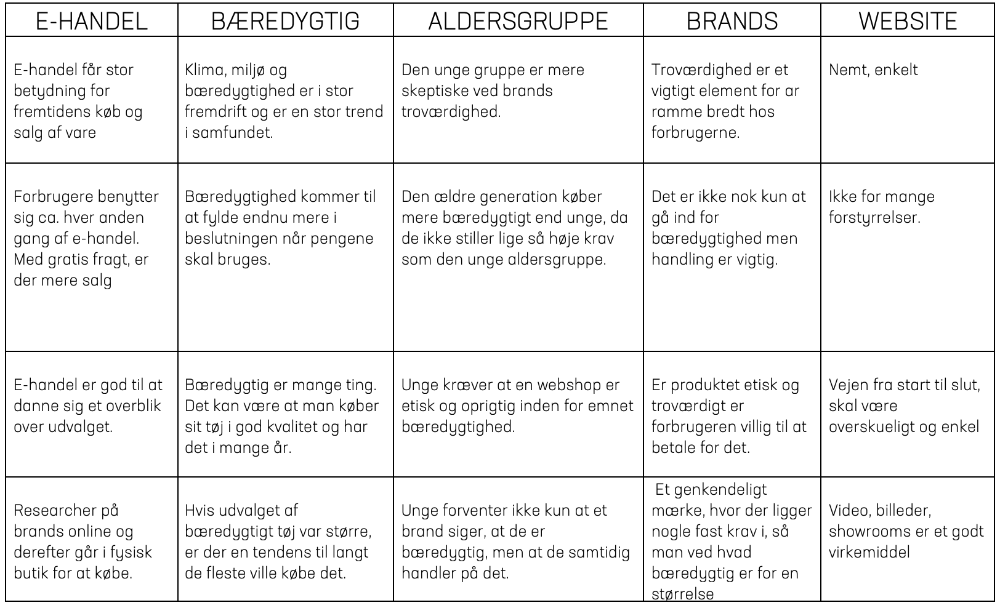
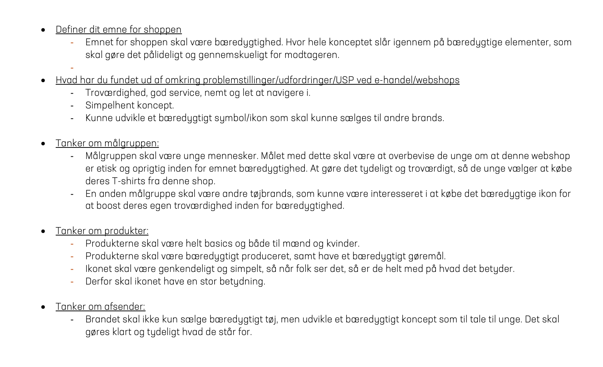

Grundlæggende ux


Prototype
I tema 3 har jeg ud fra en grundlæggende forståelse for samspillet mellem brugere og brugergrænseflader udarbejdet en prototype til en website til salg af T-shirts. SLOW DOWN er navnet på mit fiktive tøj brand, som har til hensigt at sælge bæredygtigt tøj og mindske "fast shopping" tendens. SLOW DOWN er en webshop som henter inspiration fra unges favorit webshops fx ASOS, Topshop NAKD. SLOW DOWN er en reminder til unge om at sænke farten i hverdagen og træffe de rigtige beslutninger. Den endelige prototype er udarbejdet ud fra forskellige UX research metoder. Researchen har givet viden og en lang række indsigter, som understøtter mine valg og beslutninger under produktudviklingen.
SE PROTOTYPEDe vigtigste indsigter
Emne og problemstilling
De vigtigste indsigter til min ide er indsamlet via en række UX research metoder. Jeg har benyttet Desk research, hvor jeg undersøgte viden om e-handel og bæredygtighed via sekundære data. For at få nærmere indsigt fra brugeren, anvendte jeg interview til formål at indsamle primær research. Også med observations research, hvor jeg hentede viden og indsigter gennem brugerens adfærd via What-How-Why metoden. Den sidste research metode, jeg har benyttet er survey research, hvor jeg gennem en spørgeskemaundersøgelse fik brugere til at svare på en række spørgsmål om køb af tøj og bæredygtighed.
Emnet for shoppen er at sælge bæredygtigt tøj til den unge generation. Konceptet skal slå igennem på bæredygtige elementer, der er pålidelige og gennemskuelige for målgruppen. Målgruppen er de unge mennesker. Målet med dette skal være at overbevise de unge om at denne webshop er etisk og oprigtig inden for emnet bæredygtighed. Det skal gøres tydeligt og troværdigt, så de unge vælger at købe deres T-shirts fra denne shop. Webshoppen skal designes, så den inspirerer unge og minde om de shops unge allerede gør brug af, når de køber deres tøj online som fx ASOS og NAKD.